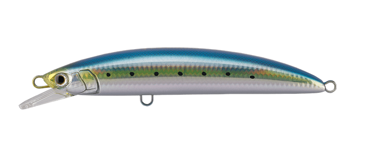
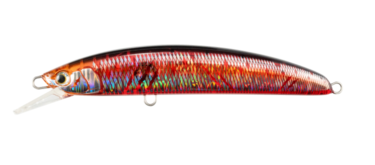
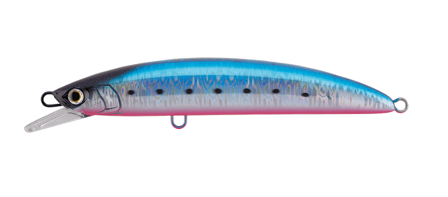
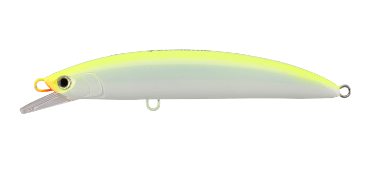

ボアーSS170
（BOAR SS170）
ボアーSS170（BOAR SS170）はMaria（マリア）のロックショア青物専用ジャーキングミノーです。
「荒磯を制す！」をコンセプトにしたボアーシリーズの、PE4号クラスに対応するダウンサイズモデル。飛距離と高速リトリーブへの対応に加え、青物の捕食スイッチを入れる「ジャーキング時の挙動」を追求しているのが最大の魅力です。

画像出典:マリア公式HP
スペック
- メーカー
- Maria（マリア）
- タイプ
- ジャーキングミノー（スローシンキング）
- 全長
- 170mm
- 自重
- 60g（フック・リングなし）
- 推奨フック
- トリプル太軸#2/0／シングル3〜5g
- 推奨リング
- ファイターズリングダエン#7
- 飛距離
- 約80m（5投平均・メーカー計測）
- ターゲット
- ヒラマサ・ブリなどロックショア青物
▼今すぐチェック

ボアーSS170の特徴
横っ飛びのスライドダートで青物の捕食スイッチを入れる、ロックショア専用ジャーキングミノー
-
ショートジャークで横っ飛びのスライドダート
ラインスラッグを出したショートジャークで、従来のミノーを凌駕する左右への横っ飛びスライドダートと水平ステイを演出。追尾してくる青物の捕食スイッチを強烈に刺激する。
-
ミディアムリトリーブでキレのある強波動ウォブンロール
リール1回転/秒のミディアムリトリーブでは、キレの良い強波動ウォブンロールアクションを発生。ジャークとただ巻きの両方で使える。
-
マグネット式重心移動で逆風にも負けない遠投
定番のダイビングペンシルが使えない逆風・荒天時でもプラッギングを成立させるため、マグネット式重心移動を搭載。10ftロッド・PE4号で約80m（5投平均）の遠投性能を持つ。
ボアーSS170の使い方
基本はラインスラッグを出したショートジャーク。左右への横っ飛びスライドダートと水平ステイで、追ってくる青物に食わせの間を作る。
広く探りたい時は、リール1回転/秒のミディアムリトリーブで強波動ウォブンロールを出して巻いてくる。ジャークとただ巻きを組み合わせて、その日の反応が良いほうを探します。
ボアーSS170の得意な状況
磯からヒラマサやブリなどの青物を狙うロックショアゲームが最大の出番。
向かい風や荒天でダイビングペンシルが使いにくい状況で、プラッギングゲームを成立させたい時に選びたい1本です。
ワンポイント
推奨タックルは10ftクラスのショアプラッギングロッド（キャストMAX100g）、シマノ6,000〜14,000番クラスのスピニングリール、PE3〜6号＋ナイロンリーダー60〜140lbです。推奨フック・リング込みで総重量は約70gを想定しています。
細軸やシングルフックにするとスローフローティングになることがあるので、フックセッティングで浮き沈みが変わる点に注意しましょう。
ボアーシリーズの使い分け
| モデル | 全長／自重 | 得意な場面 |
|---|---|---|
| SS145 | 145mm／50g | PE3号クラス対応・ベイトが小さい時のダウンサイズ |
| SS170 | 170mm／60g | PE4号クラス対応・バランスの良い中核サイズ（本記事のモデル） |
| SS195 | 195mm／85g | PE5〜8号のヘビータックル・大型青物狙い |
ボアーはSS145・SS170・SS195の3サイズ展開。使うタックルの強さとベイトサイズでサイズを選ぶのが基本だ（自重はフック・リングなし）。
オススメカラー
ボアーSS170は全9色展開。オススメのカラーを厳選して紹介します。

001 イワシソルトゲームのド定番ベイトカラー。カラーに困ったときはイワシ。

002 血みどろ鱗柄ホロの透過フラッシングに赤いクリアボディ。晴れ間にも朝マヅメにも実績の高い万能色。

003 ブルピンイワシメタルジグ定番のブルピンをミノーに。ベリーのアピールで高活性の青物に。

016 チャートパール夜明け前後の薄暗い時間帯に、スローに巻くだけでアピールできる半ナイトカラー。
画像出典:マリア公式HP
ボアーSS170に似ているルアー
-
 ボアーSS145
マリア
詳細はこちら＞
ボアーSS145
マリア
詳細はこちら＞
同じボアーシリーズの145mmモデル。PE3号クラスのタックルで使いたい時や、ベイトが小さい時はSS145と使い分けられる。
-
 レアリス ジャークベイトSWリミテッド160S
DUO
詳細はこちら＞
レアリス ジャークベイトSWリミテッド160S
DUO
詳細はこちら＞
DUOの160mmジャークベイト。ジャークで青物やサワラにスイッチを入れる使い方が、ボアーSS170と共通する。
-
 ボルゾイSW160S
シマノ
詳細はこちら＞
ボルゾイSW160S
シマノ
詳細はこちら＞
160mmのビッグベイトミノー。大型ベイトパターンの青物を、大きなシルエットで狙う考え方が重なる。